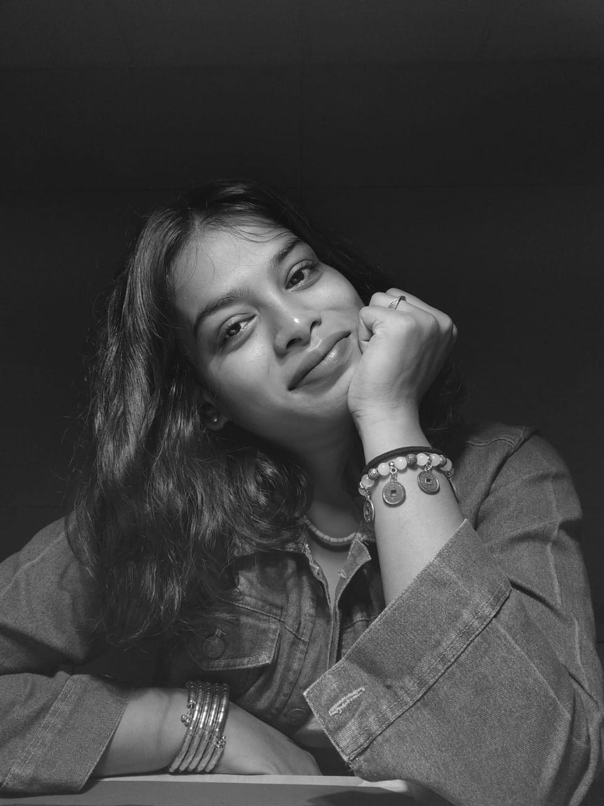

I'm passionate about product and furniture design, with a deep love for the relationship between materials, craft, and functionality. Working with wood — lathe turning, laser cutting, Dremel detailing — is where I feel most in my element.
My design journey is driven by curiosity and a belief in learning by making. I enjoy the challenge of turning raw ideas into practical, well-crafted outcomes — blending traditional skills with contemporary design thinking.
I see design as a way to solve real problems and create meaningful experiences, whether that's rethinking everyday objects or exploring material possibilities in furniture and product design.
Making is thinking.
The hand knows what the mind is still figuring out.